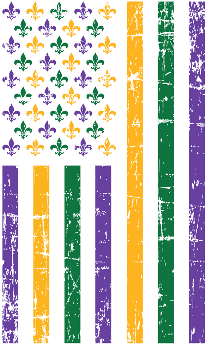

The Mardi Gras Hisyory
The origins of Mardi Gras can be traced to medieval Europe, passing through Rome and Venice in the 17th and
18th
centuries to the French House of the Bourbons. From here, the traditional revelry of "Boeuf Gras," or fatted
calf,
followed France to her colonies.
On March 2, 1699, French-Canadian explorer Jean Baptiste Le Moyne Sieur de Bienville arrived at a plot of
ground 60
miles directly south of New Orleans, and named it "Pointe du Mardi Gras" when his men realized it was the
eve of the
festive holiday. Bienville also established "Fort Louis de la Louisiane" (which is now Mobile) in 1702. In
1703, the
tiny settlement of Fort Louis de la Mobile celebrated America's very first Mardi Gras.
In 1704, Mobile established a secret society (Masque de la Mobile), similar to those that form our current
Mardi Gras
krewes. It lasted until 1709. In 1710, the "Boeuf Gras Society" was formed and paraded from 1711 through
1861. The
procession was held with a huge bull's head pushed along on wheels by 16 men. Later, Rex would parade with
an actual
bull, draped in white and signaling the coming Lenten meat fast. This occurred on Fat Tuesday.
New Orleans was established in 1718 by Bienville. By the 1730s, Mardi Gras was celebrated openly in New
Orleans, but not
with the parades we know today. In the early 1740s, Louisiana's governor, the Marquis de Vaudreuil,
established elegant
society balls, which became the model for the New Orleans Mardi Gras balls of today.
The earliest reference to Mardi Gras "Carnival" appears in a 1781 report to the Spanish colonial governing
body. That
year, the Perseverance Benevolent & Mutual Aid Association was the first of hundreds of clubs and carnival
organizations
formed in New Orleans.
By the late 1830s, New Orleans held street processions of maskers with carriages and horseback riders to
celebrate Mardi
Gras. Dazzling gaslight torches, or "flambeaux," lit the way for the krewe's members and lent each event an
exciting air
of romance and festivity. In 1856, six young Mobile natives formed the Mistick Krewe of Comus, invoking John
Milton's
hero Comus to represent their organization. Comus brought magic and mystery to New Orleans with dazzling
floats (known
as tableaux cars) and masked balls. Krewe members remained anonymous.


As Mayor of the great City of New Orleans, I invite you to visit our city to experience the excitement of
Mardi Gras! The Carnival season officially begins each year on Jan. 6 -- the Feast of the Epiphany, also
called Twelfth
Night or
Kings’ Day. Traditional balls are held in the weeks leading up to the big event.
Spectacular parades with colorful, creative floats start rolling before Mardi Gras Day. Our private Carnival
clubs,
called krewes, take on royalty status and throw beads, doubloons and toys to parade goers. Visitors quickly
learn to
say, "Throw me something mister!"
The culmination of Mardi Gras in New Orleans begins early on Mardi Gras Day when the Zulu Social Aid &
Pleasure Club and
the Rex Organization parade through the city. Music, food and elaborate costumes add to the fun-filled day
of excitement
for revelers of all ages.
New Orleans, with its unmatched culture and world-famous music and cuisine, is an exciting place to be at
any time of
the year. We invite everyone to experience Mardi Gras at least once in their lifetime. Make your plans now
to be a part
of this great tradition and see firsthand why we say, "Laissez les bon temps rouler!"